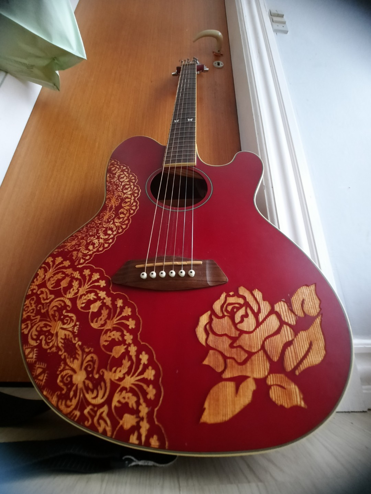

MLI
Nordisk folkemusik • Lyt til historiens klange
ᚅ • ᚈ • ᚧLyt Nu

Echoes of the Ancients
MLI — Emelie Blomgren
0:00
0:00
Numre
Demo-optagelser fra MLIs nordiske univers
-
1--:--
Echoes of the Ancients
MLI — Demo 2026 -
2--:--
Reaching
MLI — Demo 2026 -
3--:--
Signalet i Støjen
MLI — Demo 2026 -
4--:--
Signals in the Dead Zone
MLI — Demo 2026
TikTok
MLI på TikTok
Følg med i MLIs nordiske univers på TikTok
Om Kunstneren

Emelie Blomgren
Skjald • Folkemusiker • Visesangerinde
MLI er kunstnernavnet for Emelie Blomgren — en svensk folkemusiker og visesangerinde bosat i Danmark. Med rødder dybt plantet i den nordiske musiktradition bringer MLI historiens klange ind i nutiden gennem kraftfuld sang, guitar og den gamle lyre.
I 2026 deltager MLI i X Factor Danmark i +23 kategorien under mentor Drew Sycamore, hvor hun bringer folkeviser og nordisk sjæl til den store scene.